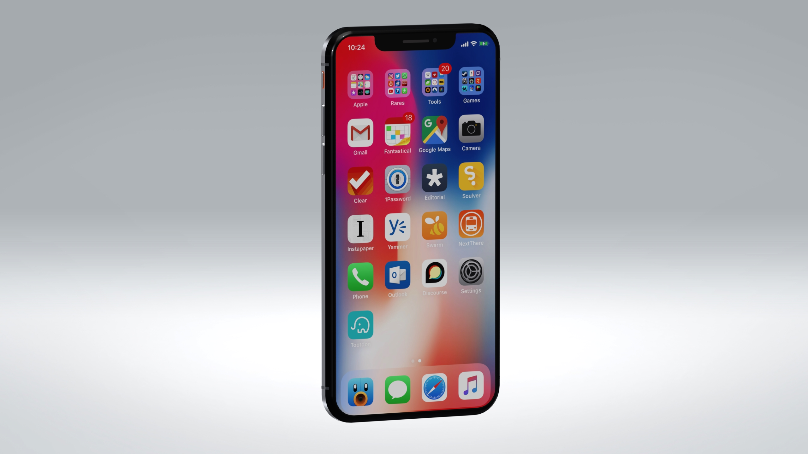
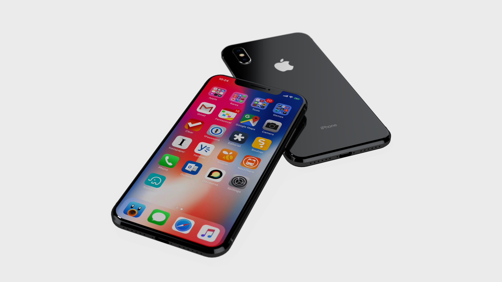

iPhone X: Photorealistic Rendering
An exercise in multi-material rendering on simple geometry. The phone's boxy shape was easy to model, but the real work was in the render: getting glass, brushed metal, and matte surfaces to behave believably under the same light. A few clever tricks with environment maps and material layering made the difference.
Design Tool: SolidWorks
Render Tool: Keyshot 6.0

